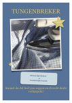
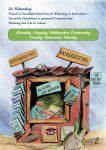

So föhl ik mi
Na? Wo geiht di dat? Wat? Dat weetst du nich? Mag ween un de Würfel kann di helpen ... würfel mol!
Tungenbreker
Hier is en echten Tungenbreker. Wenn du den heel gau seggen kannst, büst du echt en fixen Dutt!
Speel mit mi! De Lief
Dit Speel kannst du utdrucken un spelen. Wenn du en een bet dree smieten deist, denn schallst Du rechts afbögen. Bi veer, fief oder söß müsst du groodut wannern.
Allweet kennt de Week
Allweet is en echten Böker- un Bläderhöker. He weet allens - un wat he nich weet, denkt he sik ut. So klappert he jeedeen Dag op sien Schrievmaschien rüm. Just nu hett he de Wekendoog opschreven.